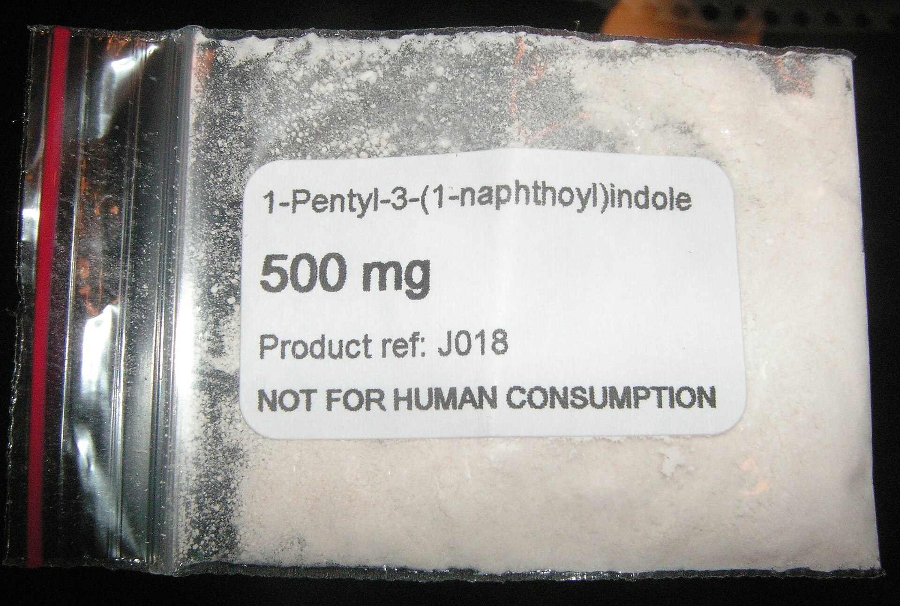
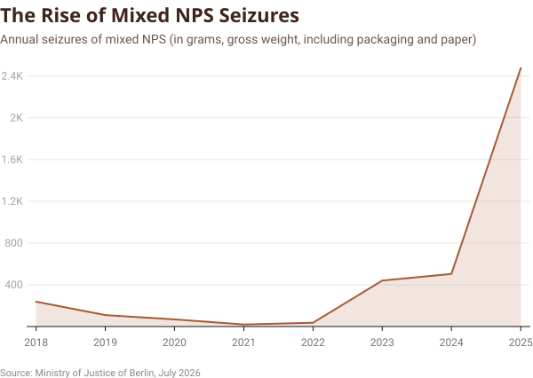
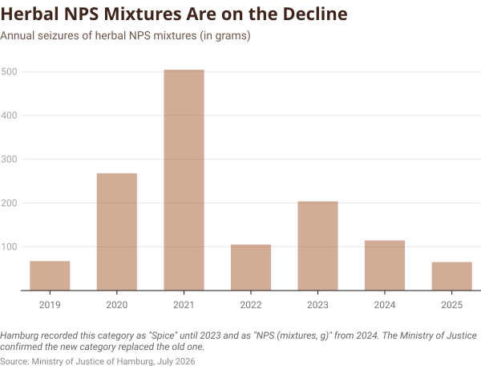
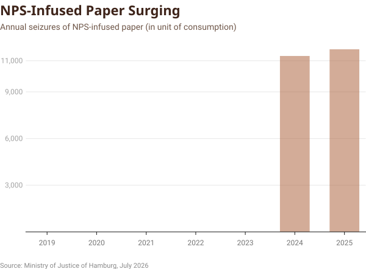
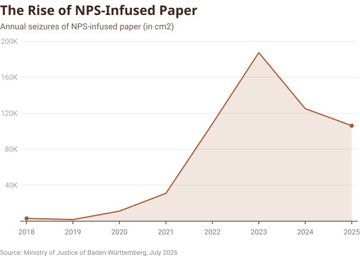

Synthetic
Cannabis
Drug smuggling in the German prison system has changed radically: In the past, packages of drugs were thrown over prison walls or handed over during visits. Today, inconspicuous letters soaked in new psychoactive substances are all it takes.
A white envelope. An address on it. Inside, a sheet of paper with a seemingly harmless message: “Happy Birthday.” To the mailroom at a prison, this letter looks like thousands of others. But some of these letters carry more than just words. They contain drugs.
The Rise of New Psychoactive Substances
The reason for this is a group of substances known as new psychoactive substances (NPSs). These are mostly synthetic compounds developed to mimic the effects of already known illegal drugs or prescription medications. They are often marketed as supposedly legal alternatives to substances such as cannabis, MDMA, or LSD. Synthetic opioids are also part of the NPS category.
These substances are particularly dangerous because they are effective even at very low doses. For THC, the primary psychoactive compound in cannabis, the typical effective dose is around 15 mg, whereas common synthetic cannabinoids can produce effects at just 0.4–1 mg. As a result, even a single gram—costing around €20 can yield hundreds to thousands of individual doses, making these substances highly attractive for trafficking and smuggling.

and historically first synthetic cannabinoids,
shown in powder form. (Source: Wikimedia Commons / CC0 1.0)
NPS are available and consumed in a wide variety of forms, including powders, pills, liquids, or drug-infused carrier materials such as paper. Surveys from the Epidemiological Survey of Substance Abuse (ESA) show that only 0.8–1% of the adult population reported using NPS in the past 12 months. But their unpredictable composition and constantly evolving nature make them a disproportionate challenge for healthcare providers, poison control centers, and policymakers.
Government for Addiction and Drug Issues
A New Drug Route Into German Prisons
One place where this development is particularly visible is the German prison system. Over the past few years, several federal states have reported a sharp increase in seizures of NPS. Berlin illustrates the trend. Between 2020 and 2022, prison authorities seized fewer than 100 grams of NPS each year. Just three years later, in 2025, that number had climbed to 2,475 grams. This is more than 25 times as much.

In response to an inquiry, the Berlin Senate Department of Justice and Consumer Protection noted that the sharp increase in seizures is also attributable to the expanded use of what are now four ion scanners. Nevertheless, this trend makes it clear that NPS now play a significant role in drug smuggling within prisons.
Although NPS include hundreds of different substances, the situation inside German prisons is far less diverse. According to prison authorities and experts, the vast majority of NPS seizures in prisons involve synthetic cannabinoids.
What the Raw Data Hides
But there is a catch. The category “synthetic cannabinoids“ covers a wide range of products, from herbal mixtures and pure substances to liquids and drug-infused paper. Berlin does not report these forms separately. Instead, they are combined into a single statistic based on gross weight, which also includes the weight of the carrier material. In response to an inquiry, the Senate Department of Justice and Consumer Protection stated that a more detailed analysis of the seized substances may only be conducted through forensic investigations by the State Criminal Police Office. The data from the Senate Department therefore cannot reveal which form is actually responsible for the dramatic increase. A more detailed dataset is needed to understand this. The prison data from Hamburg provide exactly that.
From Herbal Mixtures to Drug-Infused Paper
The detailed Hamburg data paints a much clearer picture. The left-hand chart shows that the number of seizures of herbal NPS mixtures has declined in recent years. The right-hand chart highlights the high number of consumption units recorded over the past two years.


It is important to note that these data have only been collected systematically since 2024. It is therefore likely that NPS-infused paper were already being smuggled into prisons before, but were not captured separately in the statistics. Nevertheless, the trend is clear: The rise in synthetic cannabinoids is not driven by traditional herbal mixtures. Instead, NPS-infused paper has rapidly emerged as the dominant form through which these substances enter the prison system.
The Scale of the New Smuggling Method
And Baden-Württemberg confirms this development. While the data from Hamburg show the shift away from traditional herbal mixtures, the figures from Baden-Württemberg illustrate the scale that the smuggling of NPS-treated materials has reached.
According to the Ministry of Justice, the first seizures of new psychoactive substances date back to 2015. Of all the federal states contacted for this investigation, Baden-Württemberg was the first to identify this emerging trend. The ministry attributes this, in part, to its so-called structural observers, who are stationed in every prison. Their role is to monitor subcultural developments within prisons and detect new smuggling methods and the illicit introduction of contraband at an early stage.
Since 2018, Baden-Württemberg has recorded these findings by measuring the surface area (cm²) of NPS-treated materials. The numbers rose sharply over the following years, reaching a peak in 2023. That year, authorities seized 187,500 cm² of NPS-treated material.

The scale is difficult to grasp from the numbers alone: the seized material covered a total surface area of nearly 19 m². This is roughly the size of a small bedroom or around 300 sheets of A4 paper.
It is important to note that these statistics measure the surface area of the material on which NPS were detected, rather than the quantity of the substance itself. Nevertheless, the data illustrate how rapidly this smuggling method has gained importance within the prison system.
How Prisons Are Fighting Back
After reaching its peak in 2023, the recorded figures declined significantly. In response to our request, the Ministry of Justice of Baden-Württemberg attributed this decline to a combination of countermeasures. Beginning in 2021, the state introduced ion scanners capable of detecting synthetic cannabinoids and other drugs on letters and other carrier materials. Following a successful pilot programme, additional devices were purchased and deployed across the prison system. Controls of incoming prisoner mail were also tightened, including the option of providing prisoners with photocopies instead of original letters where incoming mail is misused to smuggle NPS. At the same time, prevention, counselling, substitution, and treatment programmes aim to reduce the demand for drugs within prisons.
Bremen and Berlin have also reported the use of ion scanners. At the same time, it should be noted that since Baden-Württemberg began systematically tracking these cases early on, the state also had more time to develop and implement targeted countermeasures. Other federal states, by contrast, have only recently begun collecting such data. However, without a reliable overview of the actual extent and development of the problem, it is significantly more difficult to develop targeted and appropriate measures.
The Endless Race Against New Drug Routes
But even where authorities are already responding, the underlying challenge remains: NPS smuggling is constantly evolving. The data from Germany’s federal states show how quickly the smuggling of new psychoactive substances has changed. It no longer requires packages thrown over prison walls or handovers during visits, the drugs arrive through the mail. And as detection methods become more effective, smugglers are likely to adapt again, searching for new substances, new carrier materials, or new ways to evade controls.
The methodology is briefly summarized below. A more detailed explanation can be found here: XXX.
📊 Data Gathering and Analysis
Comprehensive data on drug seizures in German prisons is not publicly available. I therefore obtained the data through press inquiries.
Germany has nearly 200 correctional facilities, making it impractical to contact every prison as part of this project. I therefore began by submitting inquiries to a sample of 12 prisons. Some facilities, however, had not collected the requested data, lacked the capacity to respond, or referred me to the respective state authorities.
As a second approach, I contacted state justice ministries and senate departments. Since some of these institutions also referred me back to individual prisons, I ultimately pursued both approaches in parallel and worked with all available data.
As expected, all correctional facilities, state justice ministries and senate departments collect their data differently. Some prisons, for example, only record how often specific substances were found, while others document the exact quantities seized. These different approaches make a comparative data analysis challenging. The categories used to document substances also vary significantly. Some for example, use categories such as NPS paper consumption units, while others record NPS-treated materials by surface area in cm². I manually reviewed all responses and datasets received and transferred the relevant information into this Excel table, which served as the underlying dataset for this analysis. All subsequent analyses were conducted in Python.
⚠️ Limitations and Future Steps
This analysis provides an initial overview of the role of NPS in the German prison system. However, it is important to note that the findings represent an approximation due to existing data gaps. The analysis highlights initial trends and patterns but does not yet provide a complete nationwide assessment.
- Not all state justice ministries, senate departments, and correctional facilities have been contacted. A next step would therefore be to expand the data collection to all relevant institutions in order to create a more comprehensive picture of developments across Germany.
- Many federal states are only at the beginning of systematically recording NPS-related incidents. Some categories have only been documented for a few years or were introduced very recently. This can distort observed trends: An increase in recorded cases may reflect either an actual change in smuggling patterns or improved data collection. Ultimately, a data analysis can only be as reliable as the underlying data collection.
The initial inspiration for the website's design came from this article by The Pudding, although the final design has since evolved considerably beyond it.